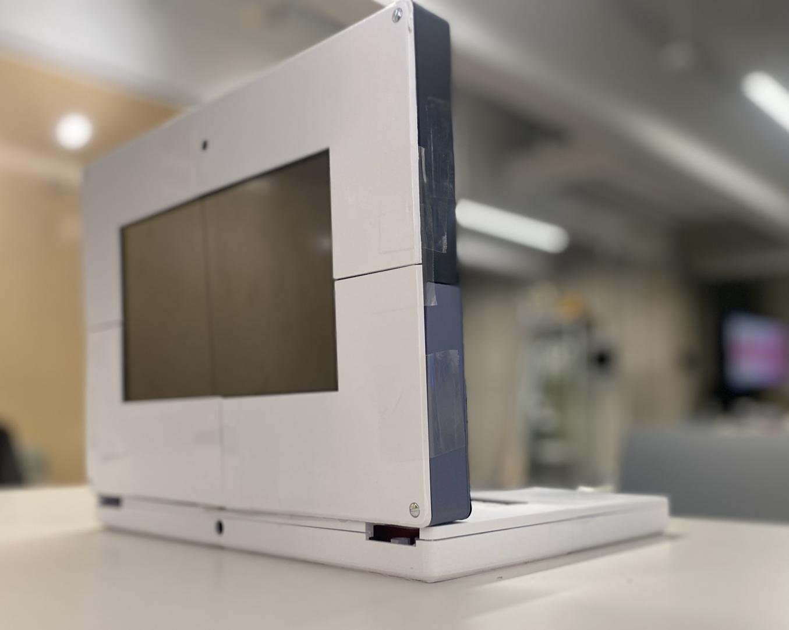
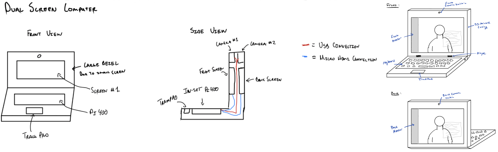
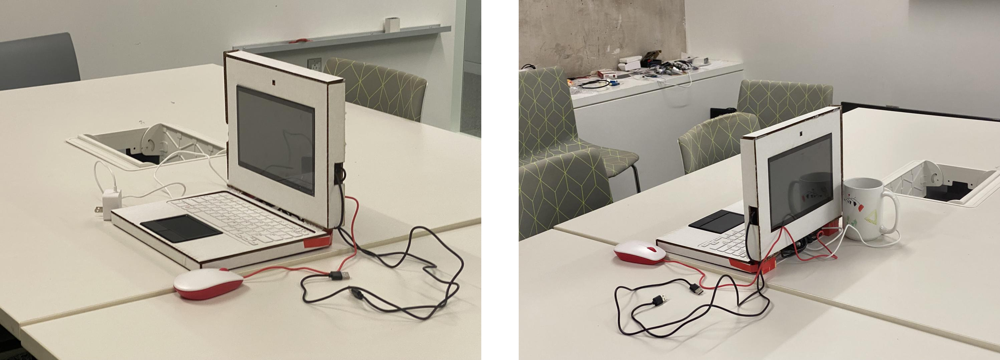
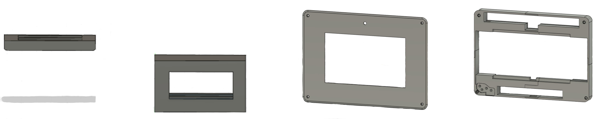
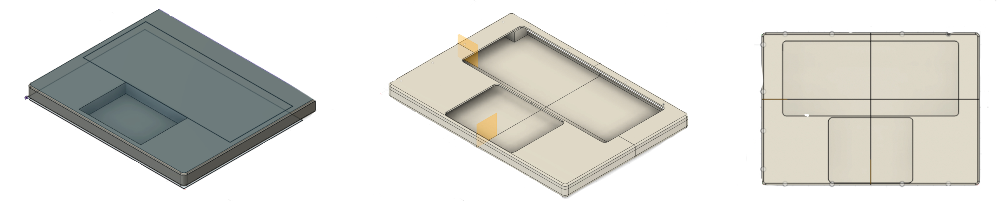

Hardware Design Process of the Mixed Reality Passthrough Window

"A personal computer that's a little less personal"
Context
When multiple people are looking at a projection screen or crowded around a desktop monitor, the use of large shared displays lack support for co-presence collaboration and simultaneous interaction.
We designed the Mixed Reality Passthrough Window, a laptop characterized by two screens, situated back to back, with two mounted cameras, facing in opposite directions. This creates the effect of looking through a window, upon which virtual content can be augmented and overlaid. The configuration allows local users sitting around the laptop to more easily interact with remote users, who appear on both sides, giving the sense that all users are sharing the same space in the round.
Ideation
The growth in remote and hybrid work has resulted in an increased demand for collaborative experiences that offer a more seamless and immersive transition between virtual and physical environments.
However, there has been little effort in exploring the presence of spatial cues for face-to-face and remote collaboration beyond the conventional one screen and one front facing camera setup.
Previous works have discovered new ways of augmenting forward facing and rear facing cameras and screens such as the Janus Table and Mixed Reality Large Screen Mobile Telepresence Robots, but these solutions require fixed displays, multiple connected devices, or external projection units that limit the extent of mixed reality collaboration due to their individualistic nature and lack of portability.
To address this, we brainstormed a new paradigm for the integration of augmented reality into a laptop design.

Our inital sketchs of the laptop.
Design Process
We chose a Rapsberry Pi 400 as our operating system as it fits every conceivable definition we could make for a computer all in one compact keyboard: it has a CPU, a GPU, RAM, I/O (GPIO, HDMI, USB, Ethernet, etc.) and storage.
To pair with the Raspberry Pi, we used
two SunFounder touchscreens to serve as the front and back laptop displays and two Arducams to serve as the front and back facing cameras.
Cardboard Prototype
We began to build our first protype by assembling the keyboard, displays, and cameras together with cardboard.

First cardboard prototype of laptop.
Through this process, we realized that we had to rethink the casing in order to accmodate for thickness of the displays, wire management, and hinge placement. We took these factors into consideration during our next step, whcih was to 3D model and print a better casing for the laptop. During this stage, we did bounce back to cardboard prototyping a few times, espcially to check dimensions of our 3D models before we print.
Top Casing
We originally looked into other laptop cases for inspiration such as the pi-top. However, we found it difficult to find existing casing that would enclose both of the screens and support their weight at the same time. We turned to making our own variations and experimented with ways to prop the displays (making inserts, creating vessels, etc.)
Ultimately, we designed the top casing so that the displays are sitting into a middle structure, in which there are lids on both ends to make them stay in place. We also added screw hole posts in the corners to keep the two lids and the middle section together.

Evolution of our 3D models for the top cover. From left to right: an initial idea of how the displays could be held together; first lid with screwpost holes; and a work in progress of the middle piece.
Bottom Casing
At the begining, we designed the bottom casing to only reflect the extrusions of where the mouse and keybaord would sit in. We quicly realized that this was not ideal as the polylactic acid (material from the 3D printing), took up space and added dead weight.
We then looked into ways on how to hollow out the bottom case without leaving the internals exposed. Our solution was a box-and-lid like method.

Evolution of our 3D models for the bottom cover. Left: initial design of just extruding the mouse and keyboard placements. Right: an earlier version where the lid just sits on top of the structure
Hinges
We struggled the most figuring out how to integrate hinges into the laptop design. When deciding on what hinge to choose from, we ruled out door hinges and 3D printing them as these types would be too flimsy and would not support our two screens at a 90 degree angle. We decided to use laptop specific hinges. However, the ones that were the most compatible had quite awkard shapes to work with and was difficult to get the exact dimmesions. So, we first went back to sketching how the hinge might work with our laptop.

Sketch of hinge joining top and bottom casing.
From there, we tested multiple hinge designs to connect the two casings. Additionally, we tested hole sizes and hexagonal sizes (for screws and screwposts) and how much they should be indented into the middle piece for the top casing.
After individually testing both the right and left hinge sizes to get the correct dimensions, we incorporated our hinge designs into the top casing and bottom casing.

Final working hinge joint tests for both top and bottom casing.
Iterations

All of our 3D printed tests.
Next Steps
Designing laptop cases are difficult.
We hope to make many more iterations of the casing and integrate with the software to make the final product.